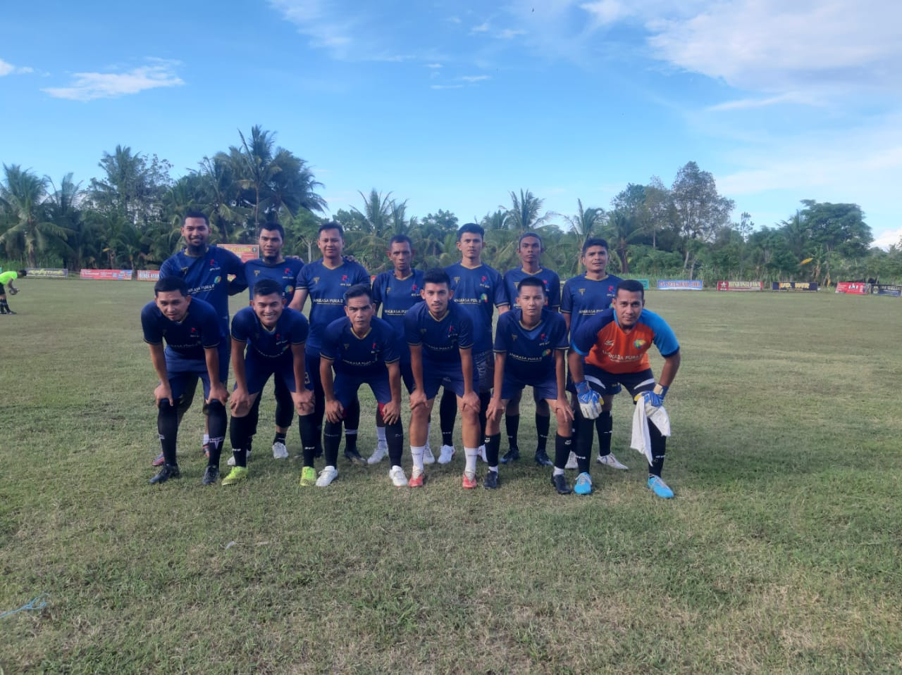

Hanafi (bg pitung) 1 gol, Khalid Abu Unaisah 2 gol
Bintang BTJ FC kembali memakan korban. Meuraxa FC harus mengakui ketangguhan para punggawa Bintang BTJ FC yang pada sore ini tidak diperkuat oleh beberapa pemain kunci mereka, seperti yahcek dan Roma Herkules.
Bintang BTJ FC sempat tertinggal terlebih dahulu melalui serangan balik cepat anak-anak Meuraxa FC. Bisa dilihat dalam tayangan ulang berikut ini:
Namun keunggulan tersebut tidak berlangsung lama. Hanafi atau yang biasa disapa bg pitung berhasil menyamakan kedudukan menjadi 1-1 setelah tendangan firstimenya tidak mampu ditahan oleh kiper Meuraxa. Tapi sayangnya, kameramen tidak meliput kejadian tersebut.
Dibabak kedua, Khalid yang menjadi "Man Of The Match" pada pertandingan kali ini, berhasil membuat Bintang BTJ unggul, setelah memanfaatkan bola rebound dari tendangan bebas Yah Wa yang gagal diantisipasi dengan baik oleh kiper Meuraxa FC.
Khalid akhirnya menyudahi perlawanan Meuraxa FC dengan mencetak gol beberapa menit menjelang akhir pertandingan. Khalid mencetak gol ketiga bagi Bintang BTJ FC setelah mendapatkan umpan terobosan dari salah satu pemain bawah Bintang BTJ, sehingga merubah skor menjadi 3-1.
Kesuksesan Bintang BTJ FC dalam pertandingan ini tentunya memberikan kebanggaan bagi para pendukungnya. Meskipun beberapa pemain kunci absen, tim berhasil mengatasi tantangan dan meraih kemenangan. Para pemain dan pelatih Bintang BTJ FC kini berada di puncak semangat dan siap menghadapi pertandingan berikutnya dengan keyakinan penuh.
Tetap pantau berita kami untuk informasi terkini seputar dunia sepak bola dan prestasi tim favorit Anda. Kami akan terus memberikan liputan lengkap tentang setiap pertandingan dan peristiwa menarik lainnya.